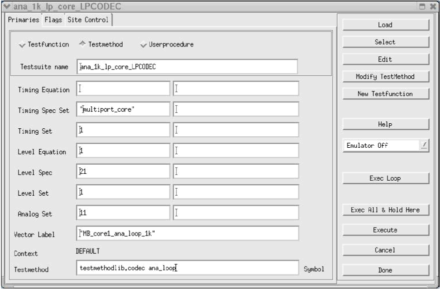
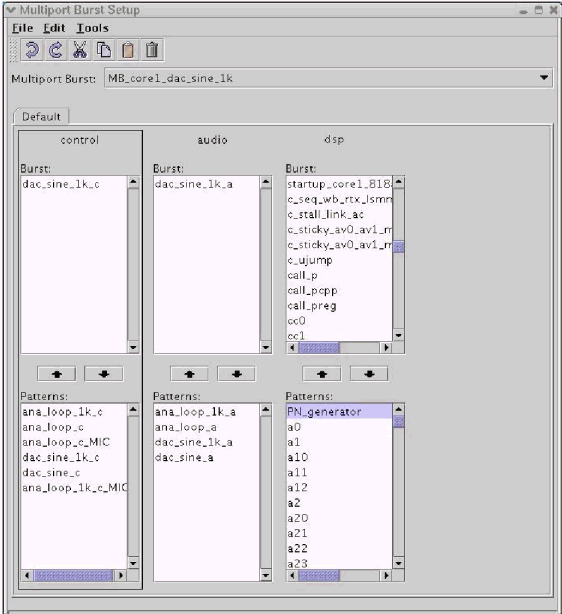
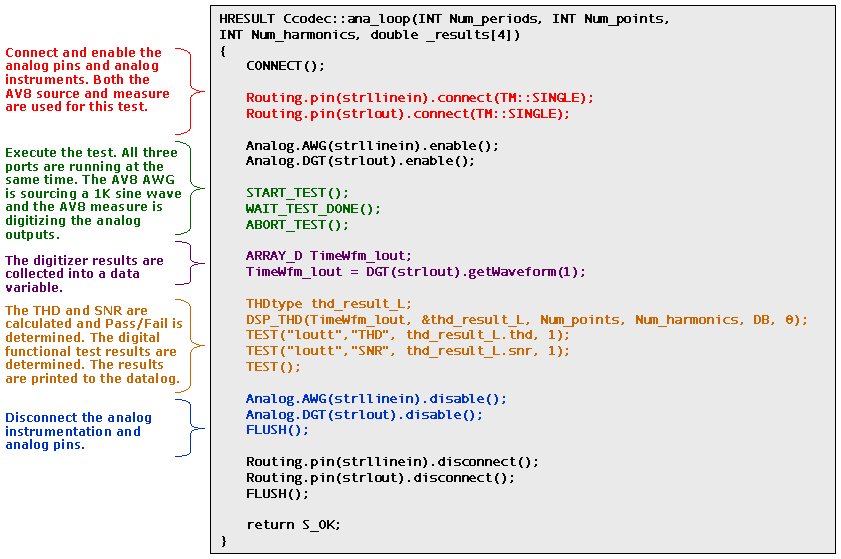

Convert Test Functions to Test Methods
The process described in the preceding sections achieves the following:
- The two separate pin configurations were merged into one by implementing a multi-port setup in which the pins for the two cores were defined as separate ports.
- The timing files were merged and new specifications for multi-port timing were created.
- The vector files converted into port labels and, with a common pattern master file, were loaded as multi-port bursts.
The test program at this point is a serial multi-port test program with sequencer data exercising only one of the two cores at a time.
The next step is to combine all possible settings to achieve the benefit of test time reduction and/or the emulation of system level operation.
Because a single-port test flow normally uses Test Functions and Test Methods, the process of converting to a multi-port test involves changing the Test Functions to Test Methods to allow concurrent testing, as test functions are not appropriate for this.
This allows parallel execution of a sequence of serial test executions and creates a new test suite, not only with multi-port timing, but also with multi-port burst labels.
The figure below shows an example of such a test suite window.

In the figure below, the multi-port vector burst is illustrated.

For the Concurrent test, each of the following represents an essential part for the merging of the two test programs.:
- The multi-port timing,
- The data contained within the vector label
- The operation performed in the selected Test Method
Even if the serial test executions consist of Test Methods instead of Test Functions, these Test Methods will need to be modified in order to accommodate port specific data, test execution settings, and port test evaluation.
Pass/Fail judgments can be made on a per-port basis and failing flags and paths can be defined as well as binning.
While the parallel execution of sequencer data is one type of parallel action available, there are also other types, such as performing data manipulation while the sequencer is active on another port.
Below is a simplified version of the C/C++ code for a test method within the CCT program. This program refers to the example described in this chapter.

In this example, the Test Methods were taken from the serial CODEC program and modifications were applied as needed.
Functional changes
- Introduced before SmarTest 6.3.2